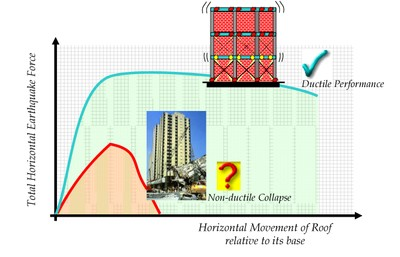

System ductility
Ductility denotes an ability of a building structure to undergo significant deformations before the failure occurs in structural members or their connections. These large deformations (usually referred to as plastic or inelastic deformations) are accompanied by damage in some of the structural components. Structures which show ductile performance may experience permanent deformations after a major earthquake.
Ductility is one of the most important factors affecting building performance in an earthquake. In general, a building can be classified as ductile or non-ductile, depending on its expected seismic performance (based on the design and construction) before an earthquake, or its observed performance after an earthquake. It is difficult, if not impossible, to determine whether a lateral load-resisting system should be classified as ductile or non-ductile based on visual information only. It is also difficult to determine whether a system is ductile or non-ductile solely based on information about material of the lateral load-resisting system. For example, a reinforced concrete building can perform either in ductile or non-ductile manner, as explained in the related glossary terms. Unreinforced masonry buildings are generally expected to behave in a non-ductile manner, however reinforced or confined masonry buildings are expected to show ductile performance.
According to the conventional seismic design approach, buildings are designed for ductile performance. Alternatively, a building can be equipped with base isolation and/or energy dissipation devices. The objective of this approach is to avoid damage in structural components and building content in case of a major earthquake.

Ductile performance of a building is characterized by large horizontal deformations (lateral sway), as shown by the green curve, while non-ductile behaviour is characterized by smaller horizontal deformations and brittle damage or collapse of a building or its components, as shown by the red curve (C.V.R. Murty, Earthquake Tip 8, NICEE, India)